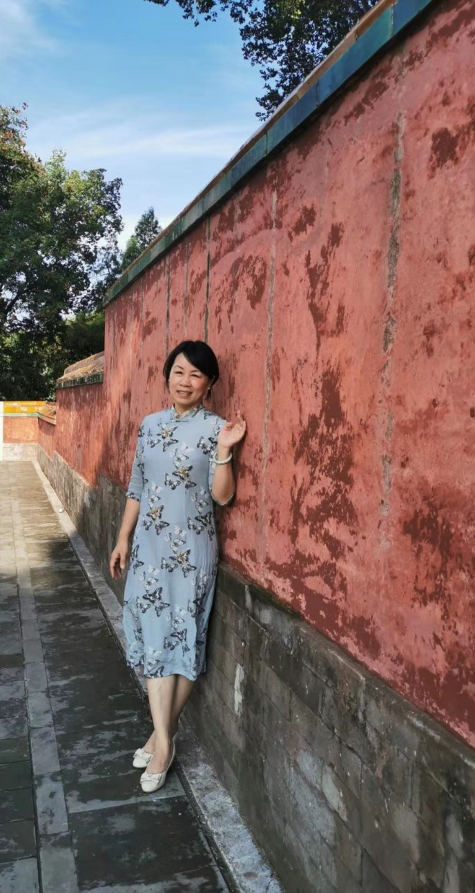

性别：女
导师类别：学术型硕士研究生导师、专业型硕士研究生导师
职称：副教授
学位：博士研究生
毕业院校：华南师范大学
媒介文化与素养，文学传播等
研究生课程：媒介素养研究、媒介文化与素养、媒介批评研究。
本科课程：媒介素养、媒介文化、传播学、中国文学
荣誉
广州市优秀教师
科研
1.《广州地区微博意见领袖的调查分析及统战工作策略、路径》
2.2013年度广东省统战理论政策研究创新成果二等奖
3.第十三届广东省高校统战理论研究会优秀论文奖
4.广州大学统战理论研究优秀论文一等奖
教学
1.广州大学优秀教师二等奖
2.广州大学教学优秀二等奖
1.广东省自然科学基金项目：“新闻报道行为的行为模式及其影响因素的实证研究”2008.10－2010.9，主持，结题
2.广州市教育局课题：“广州新闻采编人员新闻报道行为动机、行为模式及监管研究” 2009.10－ 2011.12，结题
3.广州市属高校科研项目课题：《古诗十九首》经典化研究，2011.4－2012.12，主持，结题
4.广州大学2012年度教育教学研究重点项目课题 “媒介素养教育范式下创新型传媒人才素质模型与培育模式研究”，主持，结题
5.广州市统战理论研究会2013年重点研究课题：新媒体环境下统战广州的新思路――基于对新媒体从业人员的调查分析，主持，结题
6.广东省哲学社会科学“十二五”规划2013年度学科共建项目，广东省电视节目评估与监管研究（GD13XXW02），主持；
7.广东省研究生教育创新计划项目：媒介文化与素养系列课程案例库建设， 2017-2019,主持。
1.《通俗小说中的自我意识与读者意识――以张爱玲小说< 多少恨>为例》，《广州大学学报》，2008年第2期；
2.“辞达”新解－论金圣叹的诗学理论，《文艺理论研究》，2009年第4期；
3.论比兴解诗及其历史命运，《江西社会科学》，2009年第8期；
4.准传媒人专业精神测定研究，《新闻界》，2011年第9期；
5.论新闻从业人员的专业精神，《新闻爱好者》，2012年第3期；
6.《新媒介素养教育范式下教学模式的建构》，《新闻与写作》，2014年第4期；
7.《名人微博的文本特征及其影响力分析：以新浪微博名人堂广州地区为例》《新闻与写作》，2014年第11期。
8.专著：走向经典之路--《古诗十九首》阐释史研究，暨南大学出版社,2011.12
9.参著：《广东广播电视节目评析》主编：陈一珠,暨南大学出版社,2014.12
1.澳大利亚西澳大学，进修学习；
2.英国格里姆斯比学院，公派访问学者。
广州大学粤港澳传媒研究中心
地址：广州市番禺区大学城外环西路230号
邮编：510006
Copyright © 2020 版权所有